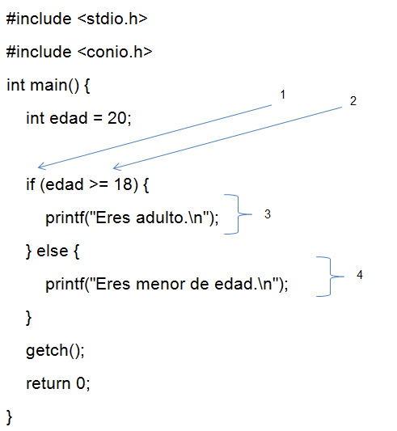

Estructura de Control If-Else
Las estructuras de control
permiten tomar decisiones dentro de un programa, de manera que se pueda
ejecutar una u otra acción dependiendo de ciertas condiciones. En C++, uno de
los mecanismos más comunes para esto es la estructura if-else.
¿Qué es el if-else?
El if-else es una sentencia
condicional que evalúa una expresión. Si la expresión es verdadera, se ejecuta un bloque de
código; si es falsa, se ejecuta
otro bloque de código (en el caso de tener un bloque else).
Sintaxis básica del if-else:
if (condición) {
// Bloque de código si la
condición es verdadera
} else {
// Bloque de código si la
condición es falsa
}
Explicación de los componentes:
1. if: Evalúa una condición (expresión que se puede verificar como verdadera
o falsa).
2. condición: Es una expresión lógica, como una comparación entre dos
valores. Ejemplo: x > 5 o edad == 18.
3. Bloque de código verdadero: Si la condición es verdadera, se ejecuta
este bloque de código.
4. else: Opcional. Si la condición es falsa, se ejecuta el bloque de código
dentro del else.
Ejemplo:
